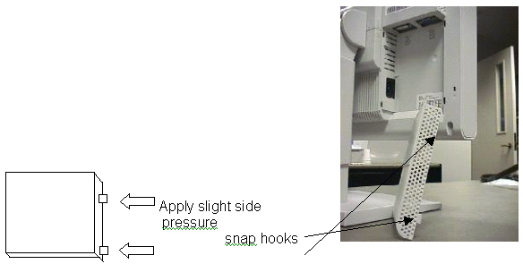
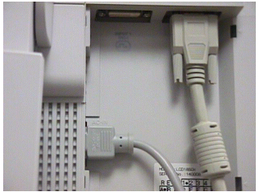
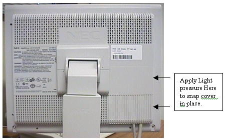
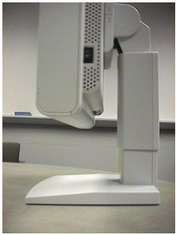

Operating Documentation
Direction 5133315-3, Rev# 14
Signa EXCITE HD 1.5T Service Methods
Module Version 1.0, Version Date 5/3/07
Operating Documentation |
| Required Persons | Preliminary Reqs | Procedure | Finalization |
|---|---|---|---|
| 1 | Not Applicable | Not Applicable | Not Applicable |
Shutdown Signa and perform a safety lockout/tagout of the Operator Workspace.
Remove the new LCD monitor from its box and its packing and set the NEC 1850X LCD color monitor on the workspace desktop and remove its rear cover. Apply light pressure to side of cover to release the plastic snap hooks. See Illustration 1.
Illustration 1: REMOVING BASE COVER

Connect the Video and power cables. Route these cables neatly to the back of the Operators Workspace. See Illustration 2.
Illustration 2: VIDEO AND POWER CABLE CONNECTIONS

Re-attach the cover to the back of the LCD. Apply light pressure on the right side of the small cover to lock the cover in place. See Illustration 3.
Illustration 3: REPLACING THE REAR COVER

Remove the Safety Lockout of the Operators Workspace and restore power to the system.
Verify that main LCD monitor power is ON. If not, press the power button on the front panel and the side panel to turn the main LCD monitor ON. See Illustration 4 for side view.
5. The monitor should be positioned no closer than 16 inches and no further away then 28 inches from your eyes. The optimal distance is 24 inches for either of the monitors.
| NOTE: | Allow the monitor to warm-up for 20 minutes before performing any adjustments. |
Illustration 4: POWER SWITCH LOCATION (ALWAYS LEAVE ON)

Boot up Signa.
Password: adw2.0<enter>
No finalization steps.